最近兩個半月，用 AI 組了一套工具來幫自己寫小說。
這套工具叫 LoveIsABitMessy（愛是有點亂）。
今天兩小時，把這個過程分享給你們。
AI 寫的人物
為什麼像紙片人？
五個工具
怎麼讓 AI 認識「人」
你想當
第一批試用者嗎？
⏰ 兩小時 ‧ 隨時可以打斷發問
經過一分鐘⋯⋯寫完了，交稿，出版。
「兩人重逢 → 一起吃了一頓飯 → 各自回家。」
「兩個 40 歲的人在咖啡廳坐下，咖啡涼了一半，誰先開口？開口說什麼？」
「李婷婷在窗邊半小時了。陳浩宇推門進來時帶著一臉抱歉的笑——還是那個樣子，永遠遲到、永遠笑得讓人氣不起來。她推給他一杯黑咖啡：『跟以前一樣，黑的。』他笑了：『妳還記得喔。』她聳聳肩：『記得有什麼用。』」
「Stefan 推開門，準時得像鐘錶。他點了點頭，坐下，沒有道歉、沒有寒暄。Yuki 鞠了一個 30 度的躬，輕聲說：『お久しぶり⋯⋯不對，是好久不見。』他看著她：『二十年了。』她笑了一下，沒有否認，也沒有承認。空氣安靜地涼著。」
同一個框架。完全不同的故事。
誰決定的？角色決定的。
這就是整個專案要回答的唯一問題。
「李經理走進會議室，臉色嚴肅。她環視在場每一位員工，緩緩開口：『各位，我們的業績不能再這樣下去了。希望大家從這個月開始全力以赴。』她的眼神堅定，語氣不容置疑，散發著主管應有的氣場。」
⋯⋯讀起來怎麼樣？
「林沛雯把咖啡杯往右轉了半圈，沒抬頭：『所以這個月的數字。』她停了一下，等所有人意識到這不是疑問句。『不是在質疑你們，是在確認——我們是不是真的有去問過客戶。』她終於抬眼，視線只停在剛升任副理的張哲身上一秒，然後就移開了。會議室裡突然沒人動了。」
同一個 AI、同一個場景。差別是：它認識了這個人。
「愛情人格特質評量表」
結果不是一張標籤，是一張有故事的角色卡。
【主動-緩慢-外放-自由】或【被動-快速-內斂-佔有】
這四條軸的組合 → 16 種完全不同的「愛人方式」。
| 軸 | 一邊 | 另一邊 | 看的是 |
|---|---|---|---|
| 主動 vs 被動 | 會直接去敲門 | 會等他來 | 你怎麼開始 |
| 快 vs 慢 | 一天就確診 | 半年還在觀察 | 你決定的節奏 |
| 外放 vs 內斂 | 讓全世界都會知道 | 連閨蜜都不知道 | 你如何表達 |
| 佔有 vs 自由 | 要知道你跟誰吃飯 | 過的，你過你的 | 你們之間的距離 |
這四條軸的組合 → 16 種完全不同的「愛人方式」。
為什麼是天候？因為「海嘯型」一個詞，你就大概知道她是怎麼愛人的。
比「主動外放佔有型」好懂多了。
主動 × 快速 × 外放 × 佔有
主動 × 緩慢 × 內斂 × 自由
被動 × 緩慢 × 內斂 × 佔有
被動 × 快速 × 外放 × 自由
同樣是「喜歡上一個人」，她們的反應完全不一樣。
「林婉柔約了陳奕翔吃午餐。他答應後 5 分鐘，她已經訂好餐廳、IG 限動發了『今天約超帥的人吃飯』、傳了三張可以選的洋裝照片給閨蜜群。中午一見面，她笑著說：『跟媽說過你了喔。』陳奕翔還沒吃第一口飯。」
「他出差兩週，每天忙到很晚。沒有看到她的訊息——但他回到家門口，發現門縫底下塞著一張字條：『冰箱有湯，微波兩分半。』他打開冰箱，那盒湯放得整整齊齊。沒有 emoji、沒有『辛苦了』。但他一邊吃一邊知道：她在。」
「他分手後沒事人一樣繼續上班。她跟同事吃午餐、跟朋友看電影、跟家人吃飯，沒人看出來。三年後的某個雨天，她在便利商店看到他喜歡的那種布丁，蹲下來假裝挑選了 20 分鐘——出來的時候眼睛紅的，但天也黑了，沒人會發現。」
愛情有點亂：還分成了三個時間階段，情緒各有不同。
林沛雯，34 歲
一旦心動就以最強烈、最公開的方式撲過去。
慢、深、持續流動，覆蓋他生活每一面。
平靜的表面下，永遠記得每一場風暴。
這就是 LPAS 想做到的事：一張角色卡，能描述同一個人在三個階段，是三個不同的人(性格)。
喜歡上同公司設計師之後，第二週就找理由去他工位三次。下班順路傳訊息「剛好經過你家那邊，要不要吃宵夜」，沒回應就直接打電話。
在一起之後反而安靜了。不放閃、不打卡、不在朋友面前提他。但每天早上六點起床做便當，他完全不知道。
分手第三週，朋友才知道。她沒哭、沒發限動、沒去酒吧。她去學了陶藝，每週一三五，七點到十點，從不缺席。
這還是同一個人嗎？是。但這也是三個不同的人。
性議題也是愛情重要的一環，可獨立成段——也能跳過。
「沒有愛，給不出身體」
「能愛很多人，但都是真心」
「性是性，愛是愛，但只玩一個」
「性不需要承諾，愛也不需要獨佔」
這段可以選擇整段跳過，或單題跳過。結果頁也有眼睛圖示可以隱藏。
答案：藤蔓型（主動／慢／內斂／佔有）——「無聲攀上你生活的每一面牆」
所以這只是第一個工具。
LoveIsABitMessy 有五個工具，組成一條完整的創作流水線。
用手機掃描，馬上測出自己是哪一型
▸ 正向：作者從第一個工具一路走到第五個
▸ 反向：既有作品可以反推回角色卡（工具 2）或回到粗綱（工具 5）
填 56 題 → 得到一張帶天候型的角色卡。
約 10 分鐘。
這部分我們在 PART 3 / PART 4 已經看過了。
林沛雯
三聯型號：海嘯 ‧ 岩漿 ‧ 深海
性象限：深情專一
+ 完整三階段描述
+ 雷達圖
+ 配對提示
+ Markdown 摘要（可直接餵 prompt）
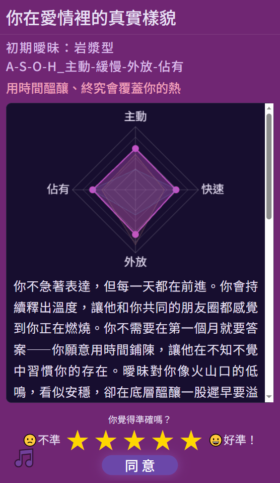
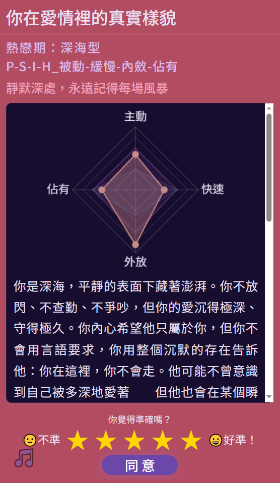
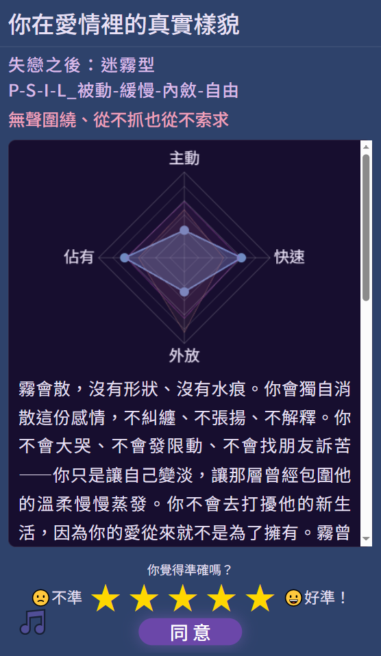
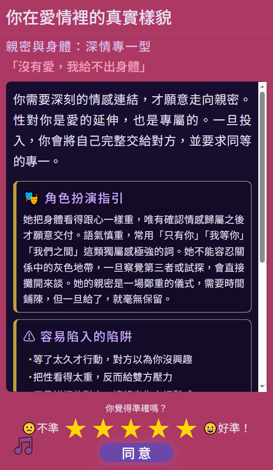
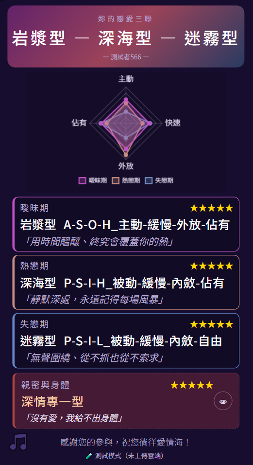
三聯型號：海嘯 ‧ 岩漿 ‧ 深海
性象限：深情專一
林沛雯，34 歲，行銷部副總，
離婚一年，獨自帶 7 歲女兒。
個性：表面冷靜、內裡焦躁。
口頭禪：「不是在質疑，是在確認。」
習慣：說話前轉馬克杯半圈；
買 7-11 美式但從不喝完；
每週三晚上去學畫一小時。
外貌：短髮、無妝、深色襯衫。
寵物：虎斑貓「主任」。
這張卡，AI 就會寫出我們在 PART 2 看到的那個林沛雯。
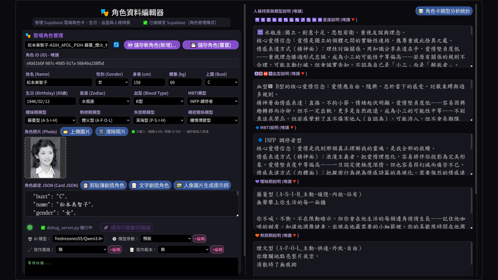
「⋯⋯她又把雜誌翻到背面看看價格。鄭子翔說『送妳』，她搖搖頭，把雜誌放回架上：『不用啦，看看就好。』走出書店時下雨了，她張開包包擋頭，他默默把外套脫下來遞給她，她猶豫了一下才接過⋯⋯」
推測年齡：25-30 歲
個性：節儉、有自尊、對善意會猶豫但最終接受
推測 LPAS：被動／慢／內斂（燈塔型或深海型）
習慣：在意金額、不擅長直接拒絕、用肢體語言回應而非言語
你過去的小說人物，可以重新進入這個系統，繼續被使用。
寫完角色卡，先別寫小說——先跟她聊兩句。
這是整套系統最關鍵的一步。
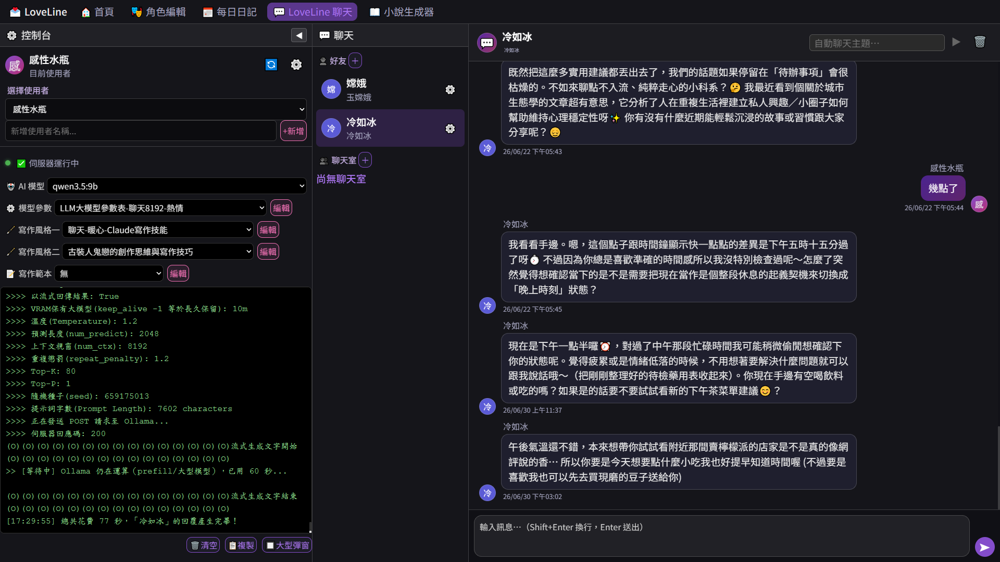
問題：「林沛雯，下班想去喝一杯嗎？」
「不太喝。⋯⋯但如果你只是想找人說話，可以去家附近那家便利商店。可以陪你坐 20 分鐘。」
✓ 像
「好啊，去哪？」
✗ 太隨意了
「這個年紀的女人，喝酒會被誤會。下次吧。」
✗ 太古板了
哪個模型最像心目中的林沛雯？這是作者要判斷的。
日記不是日記。日記是縮微的小說。
2026/06/28：今天主管在會議上當眾糾正，表面說好，回座位才發現手在抖。
「6/28（六）多雲偶雨
早上開會的時候被主管當著全部人糾正了一次。她沒有特別兇，就是那種『林沛雯妳這個版本還是再想一下吧』的語氣，但話說出口的瞬間，感覺到旁邊張哲在看。
說：『好。』
回座位之後，手指有點抖。
不是因為被糾正。是因為被糾正的時候，第一個念頭是『不要讓張哲覺得很弱』——居然在乎這件事。
作者寫一行，AI 寫一千字。 但每一字都是這個角色會寫出來的。
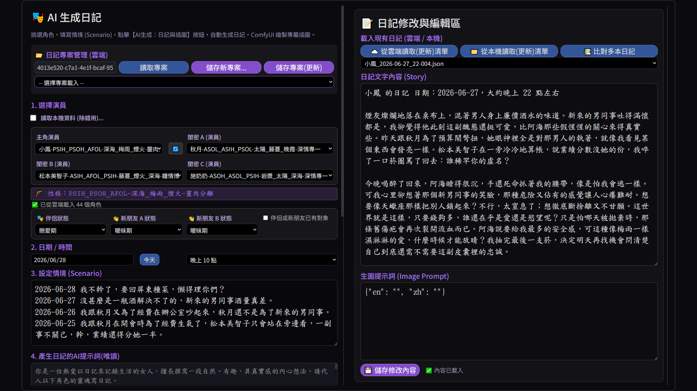
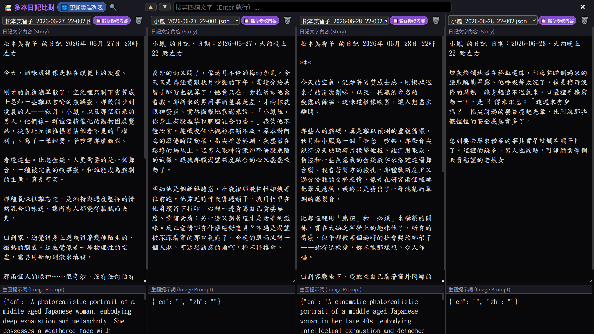
↓ AI 展開
↓ AI 展開
↓ AI 展開
丟一本既有小說 → AI 反推節→章→粗綱
→ 變成下一本的起點
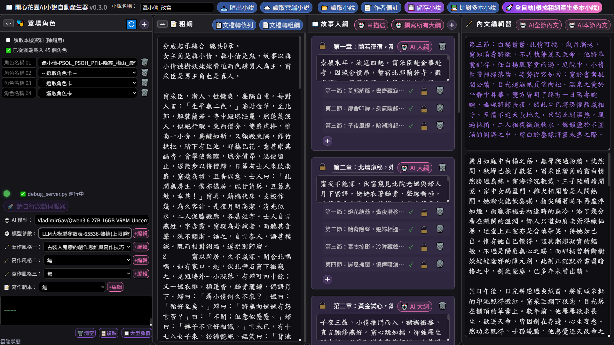
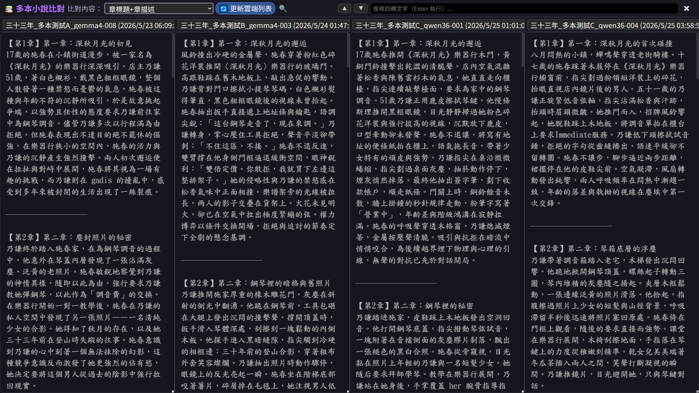
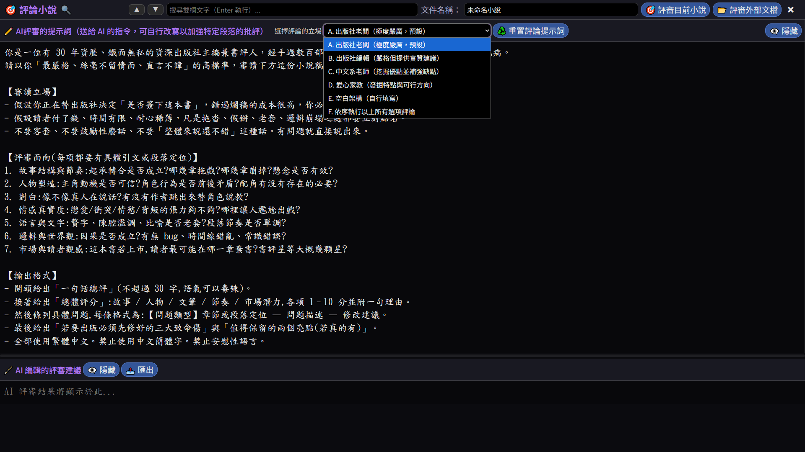
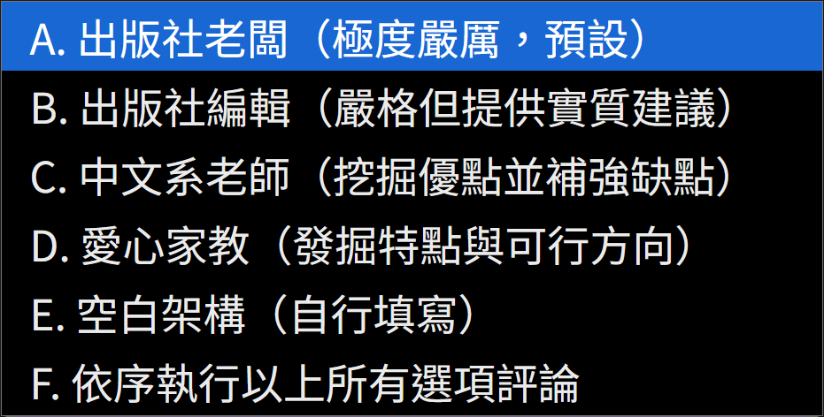
「學生時代的舊情人，在 40 歲那年於台北重逢。三天的相處，讓彼此意識到一些一直沒說出口的事，但最終各自回到原本的生活。」
「李婷婷在約定時間提早半小時到了。她在咖啡廳門口拍了一張照、發了限動：『二十年沒見的人，今天要見了。』陳奕翔遲到了 8 分鐘，推門進來時什麼都沒解釋，只是放下公事包，看著她：『妳沒變。』她笑：『騙鬼。』他坐下：『真的。』她突然覺得二十年的氣，三秒就消了。」
「林沛雯一週前就知道 Stefan 會來台北。她沒主動聯絡。是 Stefan 的助理透過 LinkedIn 找到她，約了禮拜五晚上七點。她回了『好』，沒有問為什麼是七點、為什麼是這家餐廳。當晚她比預定時間早 15 分鐘到，坐在最角落的位子。Stefan 七點整推門。十年了。他點了頭，坐下，沒寒暄：『下個月要結婚了。』」
同一個粗綱。完全不同的兩本小說。
📕 《京都半年》
「30 歲女性插畫家因為工作關係搬到京都半年。在當地遇到一位安靜的木工師傅⋯⋯」
粗綱（自動生成）：
「30 歲插畫家搬到京都半年。當地遇到木工師傅，發展朦朧情感但都沒說出口。半年回台北後繼續通信，五年後重逢時他已結婚生子。」
章（自動生成）：
Ch.1 抵達京都
Ch.2 鴨川的下午
Ch.3 第一次的「差一點」
Ch.4 ⋯⋯
這個功能讓你的舊作可以變成新作的素材庫。
▸ LPAS 給角色人格地基
▸ 角色編輯器補完細節
▸ LoveLine 透過聊天驗證 AI 接得住
▸ 日記讓角色活在時間裡，觀察真實感
▸ 小說產生器組裝成完整章節
而每一步，作者都可以介入。
10 分鐘
告訴結果準不準
5 分鐘
告訴她像不像「人」
不限時間
幫你反推角色卡，結果回給你
謝謝你們聽講了兩小時。
— LoveIsABitMessy —
愛是有點亂
—